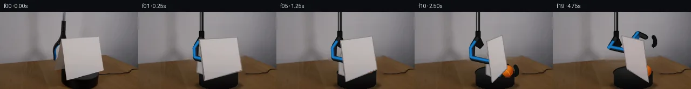

![首帧]()

Round 00
2026-11-04T19:07:44.327338+00:00像素候选变化代码 +320/−0inspection 更新
pixels 3ea046d41a5b43d1 · code 96f5ab074ef89836
查看本轮 generate.py 真实 diff
--- previous/generate.py +++ current/generate.py @@ -0,0 +1,320 @@ +from pathlib import Path + +import cv2 +import numpy as np +from PIL import Image, ImageDraw, ImageFont + +import artifact_io + + +ROOT = Path(__file__).resolve().parent +W, H = 256, 144 +RNG = np.random.default_rng(20261105) + + +def smoothstep(v): + v = np.clip(v, 0.0, 1.0) + return v * v * (3.0 - 2.0 * v) + + +def alpha_over(dst, src, alpha): + """Composite uint8 RGB src over dst with scalar/2-D float alpha.""" + if alpha.ndim == 2: + alpha = alpha[..., None] + return np.clip(dst.astype(np.float32) * (1.0 - alpha) + + src.astype(np.float32) * alpha, 0, 255).astype(np.uint8) + + +def clean_plate(source): + """Remove the photographed apparatus while retaining the locked background.""" + mask = np.zeros((H, W), np.uint8) + # Grabber, card and folded support. + cv2.fillPoly(mask, [np.array([(109, 0), (123, 0), (122, 43), (128, 60), + (121, 89), (196, 108), (190, 131), + (101, 114), (96, 70), (109, 45)], np.int32)], 255) + cv2.fillPoly(mask, [np.array([(107, 47), (187, 43), (197, 113), + (186, 130), (119, 133), (97, 111)], np.int32)], 255) + # The turntable is redrawn because a broad card initially covers its top. + cv2.ellipse(mask, (149, 124), (39, 23), 0, 0, 360, 255, -1) + mask[137:144, 109:190] = 255 + mask = cv2.dilate(mask, np.ones((5, 5), np.uint8), iterations=1) + plate = cv2.inpaint(source, mask, 7, cv2.INPAINT_TELEA) + + # Stabilize the central wall with a soft row-wise interpolation. This avoids + # propagating card edges through the large, nearly textureless masked region. + for y in range(0, 94): + xl, xr = 91, 205 + left = source[y, xl].astype(np.float32) + right = source[y, xr].astype(np.float32) + for x in range(96, 201): + u = (x - xl) / (xr - xl) + target = left * (1.0 - u) + right * u + # Preserve the broad illumination hump found in neighboring wall rows. + target += 8.0 * np.sin(np.pi * u) + edge = min((x - 96) / 13.0, (200 - x) / 13.0, 1.0) + a = 0.78 * smoothstep(edge) + plate[y, x] = np.clip(plate[y, x] * (1.0 - a) + target * a, 0, 255) + plate = cv2.GaussianBlur(plate, (3, 3), 0.45) + return plate + + +def draw_platform(frame): + """Matte powered turntable and its fixed right-hand cable.""" + ov = frame.copy() + # Reconnect the lead to the untouched photographed cable. + cv2.polylines(ov, [np.array([(176, 113), (194, 114), (207, 111), (221, 113)], + np.int32)], False, (27, 19, 13), 2, cv2.LINE_AA) + cv2.polylines(ov, [np.array([(177, 112), (194, 113), (207, 110), (220, 112)], + np.int32)], False, (7, 6, 5), 1, cv2.LINE_AA) + # Soft cast shadow on the wood. + sh = np.zeros((H, W), np.uint8) + cv2.ellipse(sh, (149, 137), (44, 8), 0, 0, 360, 105, -1, cv2.LINE_AA) + sh = cv2.GaussianBlur(sh, (11, 5), 2.3) + frame[:] = alpha_over(frame, np.zeros_like(frame), sh.astype(np.float32) / 255.0) + + # Cylindrical body: a subtle vertical gradient constrained by a rounded mask. + body_mask = np.zeros((H, W), np.uint8) + cv2.rectangle(body_mask, (113, 114), (184, 134), 255, -1) + cv2.ellipse(body_mask, (148, 134), (35, 10), 0, 0, 180, 255, -1) + cv2.ellipse(body_mask, (148, 114), (36, 11), 0, 180, 360, 255, -1) + body = np.zeros_like(frame) + for y in range(101, 144): + v = 24 - int(max(0, y - 113) * 0.65) + body[y, :, :] = (max(5, v - 2), max(5, v - 1), v) + body[:, :, 0] += np.linspace(0, 5, W, dtype=np.uint8)[None, :] + frame[:] = alpha_over(frame, body, cv2.GaussianBlur(body_mask, (3, 3), .5) / 255.0) + + # Elliptical upper deck with a broad, dim reflection. … diff truncated; 233 more lines …